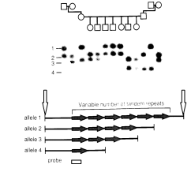
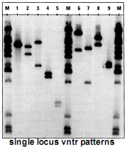

One of the most important tools underlying the revolution in medical genetics is the ability to visualize sequence differences directly in DNA. When studied in the context of a population, these differences in DNA sequences are called polymorphisms; they may occur in coding regions (exons) or noncoding regions of genes. The ability to visualize thousands of DNA polymorphisms has made possible family studies for tracking genes of medical importance. This technique has located and identified genes for many disorders with a clear pattern of mendelian inheritance, such as cystic fibrosis, the inherited muscular dystrophies, and neurodegenerative disorders such as Huntington's disease. Methods that exploit genetic polymorphism will also be essential for finding genes that predispose people to more common conditions in which inheritance patterns are complex, such as diabetes, atherosclerosis, and hypertension.
DNA polymorphisms are also playing a crucial part in unraveling the genetic basis of tumor formation and progression in cancer. They provide markers for the loss of specific chromosomal segments during the evolution of a tumor. DNA polymorphisms have already been crucial in the identification of genes important for susceptibility to common forms of cancer, such as colon cancer, as well as susceptibility to less common childhood tumors, such as retinoblastoma and Wilms' tumor.
The most useful DNA sequence polymorphisms have many alternative forms. The value of highly variable DNA sequences as genetic markers rests on straightforward principles. Every person carries two copies of each chromosome except the sex chromosomes. If a DNA polymorphism is to be useful in analyzing the transmission of the two chromosomes in a family or the loss of one of the chromosomes during tumorigenesis, then the DNA copies at the polymorphic site of the person under study must be different in the two chromosomes (Figure 1A), Figure 1B), Figure 1C), and Figure 1D). The likelihood that a given person will have different DNA sequences at the polymorphic site directly determines the usefulness of that site in genetic studies. Chromosomal sites at which the DNA sequences can have many alternative forms are thus ideal sites for genetic markers. At these sites, a person is most likely to carry two alternative DNA sequences, accurately marking the two alternative chromosomes.
In the human genome, the sites that have the properties most favorable to such extensive variation include a repetition of the same short DNA sequence a variable number of times. Such sequences are called tandem-repeat sequences. A DNA sequence with such variation may be as short as two base pairs or as long as several hundred base pairs. Highly variable sequences of this type are well distributed throughout the length of every human chromosome. When tandemly repeated sequences are replicated during cell division, the number of repeats can change. The frequency of this kind of replication error is high enough to make alternative lengths at the polymorphic site common, but the rate of change in the length of the site is low enough that the size of the DNA at the polymorphic site serves as a stable trait in family studies (Figure 1A).
Two techniques, Southern blotting and the polymerase chain reaction (PCR), can measure the length of the DNA sequence at the polymorphic site (Figure 1B). The one to choose depends on the length of the tandemly repeated sequence. A repeated sequence 20 to 40 base pairs in length leads to variation in DNA lengths of hundreds or even thousands of base pairs at the polymorphic site. Southern blotting is best for visualizing this degree of variation in length. Very short tandemly repeated sequences, only two, three, or four base pairs long, can also vary highly. For these, the PCR is preferred. Whichever technique is used, its goal is to assess accurately the length of the DNA segment between two fixed points on each chromosome. These two points include some DNA adjacent to the repeated sequence as well as the repeated sequence itself. In the case of Southern blotting, the position of the fixed points is defined by the location of restriction-enzyme digestion sites in the DNA flanking the repeated sequence. In the case of PCR, the positions in the flanking DNA of sequences homologous to the oligonucleotide PCR primers define the fixed points.
In Southern blotting, the DNA isolated from each patient or tumor to be typed is digested with a restriction enzyme, separated on the basis of size by agarose-gel electrophoresis, and transferred to a nylon membrane. A DNA probe can reveal directly on the nylon membrane the size of DNA fragments carrying the repeated sequence. This probe corresponds to a sequence in the DNA flanking the repeated sequence. In general, DNA from one person shows two such DNA fragments or bands (Figure 1C). For each chromosomal site, one of the two bands will be passed to the next generation, and the other will not, thus indicating the outcome in genetic transmission that occurred at this particular chromosomal site.
With the PCR method, the unique sites of primer binding adjacent to the repeated sequence allow specific amplification of the region that includes the repeat. The size of the amplified DNA molecules representing the polymorphic site can now be determined with the same technique that determines the DNA sequence. Precise determination of the length of the amplified DNA molecules usually shows two alternative copies of the DNA fragment, one for each of the chromosomes on which that sequence resides. The application of the two techniques has varied somewhat in human genetic studies; each has advantages and limitations. Sites of short sequence-length variation have been found to be widely distributed along the chromosomes, making them the most widely used sites in genetic-linkage studies designed to track medically important genes in families.
Studies of tumors must compare the DNA of normal cells with that of cancer cells. The normal cells usually have two bands, whereas the tumor cells often have only one. This finding is diagnostic of the loss of one copy of a chromosomal region during tumorigenesis. The problem of contamination of a tumor by normal cells presents important issues for studies of this type. Because the PCR involves an amplification process, the amount of material in the starting sample and the amount present in the final amplification product are not necessarily linearly related. Making a judgment about the loss of chromosomal material in a tumor sample contaminated with a substantial number of cells from surrounding normal tissue can be quite challenging. Unlike the results of the PCR, the signal generated by the Southern blotting procedure is directly proportional to the relative amount of each allele present in a tumor sample. Southern blotting has thus been used with particular effect in studies of the loss of chromosomal material by tumor cells (Figure 1D).
Genetic mapping can determine the relative positions of highly variable DNA sites on each chromosome. Well-characterized polymorphic DNA sites now number in the thousands. The availability of this large number of closely spaced genetic markers has revolutionized human genetics, because it allows the application of genetic-mapping strategies with great precision. For many medically important genes, particularly those that contribute to a predisposition to common medical conditions, the primary limitation to their identification was until recently the availability of a sufficient number of highly informative genetic markers. The techniques described here have removed this limitation. As a result, many important developments in all aspects of medicine are likely to follow.
One more important class of DNA polymorphism is single-nucleotide polymorphism
A single-nucleotide polymorphism (SNP, pronounced snip) is a DNA sequence variation occurring when a single nucleotide— A, T, C, or G — in the genome (or other shared sequence) differs between members of a species (or between paired chromosomes in an individual). For example, two sequenced DNA fragments from different individuals, AAGCCTA to AAGCTTA, contain a difference in a single nucleotide. In this case we say that there are two alleles : C and T. Almost all common SNPs have only two alleles.
DNA molecule 1 differs from DNA molecule 2 at a single base-pair location (a C/T polymorphism).Within a population, SNPs can be assigned a minor allele frequency — the lowest allele frequency at a locus that is observed in a particular population. This is simply the lesser of the two allele frequencies for single-nucleotide polymorphisms. There are variations between human populations, so a SNP allele that is common in one geographical or ethnic group may be much rarer in another.
In the past, SNPs with a minor allele frequency of greater than or equal to 1% (or 0.5%, etc.) were given the title "SNP".[1] Some used "mutation" to refer to variations with low allele frequency. With the advent of modern bioinformaticsand a better understanding of evolution, this definition is no longer necessary, e.g., a database such as dbSNP includes "SNPs" that have lower allele frequency than one percent.[2]
Single-nucleotide polymorphisms may fall within coding sequences of genes, non-coding regions of genes, or in theintergenic regions between genes. SNPs within a coding sequence will not necessarily change the amino acid sequence of the protein that is produced, due to degeneracy of the genetic code. A SNP in which both forms lead to the same polypeptide sequence is termed synonymous (sometimes called a silent mutation) — if a different polypeptide sequence is produced they are nonsynonymous. A nonsynonymous change may either be missense or nonsense, where a missense change results in a different amino acid, while a nonsense change results in a premature stop codon. SNPs that are not in protein-coding regions may still have consequences for gene splicing, transcription factor binding, or the sequence of non-coding RNA.
Variations in the DNA sequences of humans can affect how humans develop diseases and respond to pathogens,chemicals, drugs, vaccines, and other agents. SNPs are also thought to be key enablers in realizing the concept ofpersonalized medicine.[3] However, their greatest importance in biomedical research is for comparing regions of the genome between cohorts (such as with matched cohorts with and without a disease).
The study of single-nucleotide polymorphisms is also important in crop and livestock breeding programs (see genotyping). See SNP genotyping for details on the various methods used to identify SNPs.
Microsatellites Longer DNA sequence repeats are Microsatellites, or Simple Sequence Repeats (SSRs called also STRs), which are polymorphic loci present in nuclear and organellarDNA that consist of repeating units of 1- 6 base pairs in length. [1] They are typically neutral, co-dominant and are used as molecular markers which have wide-ranging applications in the field of genetics, including kinship and population studies. Microsatellites can also be used to study gene dosage (looking for duplications or deletions of a particular genetic region).
One rare example of a microsatellite is a (CA)n repeat, where n is variable between alleles. These markers often present high levels of inter- and intra-specific polymorphism, particularly when tandem repeats number one hundred or greater.[2] The repeated sequence is often simple, consisting of two, three or four nucleotides (di-, tri-, and tetranucleotide repeats respectively), and can be repeated 10 to 100 times. CA nucleotide repeats are very frequent inhuman and other genomes, and are present in every few thousand base pairs. As there are often many alleles present at a microsatellite locus, genotypes within pedigrees are often fully informative, in that the progenitor of a particular allele can often be identified. In this way, microsatellites are ideal for determining paternity, population genetic studies andrecombination mapping. It is also the only molecular marker to provide clues about which alleles are more closely related.[3]
Microsatellites owe their variability to an increased rate of mutation compared to other neutral regions of DNA. These high rates of mutation can be explained most frequently by slipped strand mispairing (slippage) during DNA replication on a single DNA strand. Mutation may also occur during recombination during meiosis.[4] Some errors in slippage are rectified by proofreading mechanisms within the nucleus, but some mutations can escape repair. The size of the repeat unit, the number of repeats and the presence of variant repeats are all factors, as well as the frequency of transcriptionin the area of the DNA repeat. Interruption of microsatellites, perhaps due to mutation, can result in reduced polymorphism. However, this same mechanism can occasionally lead to incorrect amplification of microsatellites; if slippage occurs early on during PCR, microsatellites of incorrect lengths can be amplified.
Microsatellites can be amplified for identification by the polymerase chain reaction (PCR) process, using the unique sequences of flanking regions as primers. DNA is repeatedly denatured at a high temperature to separate the double strand, then cooled to allow annealing of primers and the extension of nucleotide sequences through the microsatellite. This process results in production of enough DNA to be visible on agarose or polyacrylamide gels; only small amounts of DNA are needed for amplification as thermocycling in this manner creates an exponential increase in the replicated segment[5].
VNTR The longest DNA repeats are A Variable Number Tandem Repeats (or VNTR). This is a location in a genome where a short nucleotide sequence is organized as a tandem repeat. These can be found on many chromosomes and often show variations in length between individuals. Each variant acts as an inherited allele, allowing them to be used for personal or parental identification. Their analysis is useful in genetics and biology research, forensics, and DNA fingerprinting. VNTR loci are hypervariable loci or minisatellite sequences, which vary in number of repeats of short (16-300 bp) core segment.

VNTR have high levels of polymorphism, many alleles and usually can be visualized by Southern blotting or PCR as shown below. VNTR loci are applied in DNA fingerprinting, forensic paternity and linkage analysis.

One can see a good PowerPoint presentation describing STRs and SSRs and their applications in MITOPENCOURSEWARE